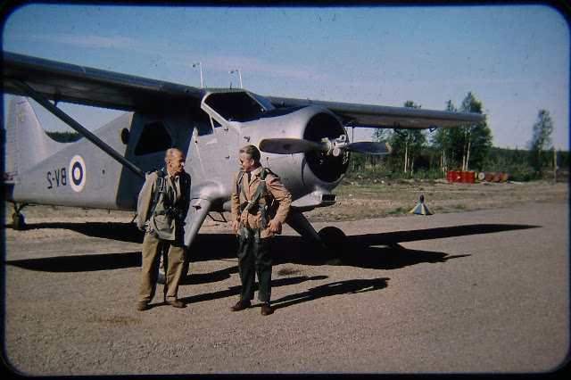

Helsingistä Jäämerelle ja takas vuonna 1971 From Helsinki to the Arctic Ocean and Back in 1971
Fillari oli yksivaihteinen, Jupiter-merkkinen jonka ostin omilla rahoilla. Matkalaukku oli Viipurista, jonkilainen evakkoreppu siis. Kuva Lahden läheltä The bike was a single-speed Jupiter brand that I bought with my own money. The suitcase was from Vyborg, some kind of evacuee backpack. Photo from near Lahti

Olin 18-vuotias. I was 18 years old.

Ompelin teltan itse. Se oli vain kangasputkilo ilman ovia. Makuupussi oli myös itsetehty, eristeenä vaahtomuovi I sewed the tent myself. It was just a fabric tube without doors. The sleeping bag was also homemade, insulated with foam rubber


Vedin ehkä 70 kilsaa päivässä, matka kesti siis kuukausia. Tutkin kaikki nähtävyydet. Jokaiseen lahoon kolmiomittaustorniin oli myös pakko kiivetä. I probably rode about 70 kilometers a day, so the trip took months. I explored all the sights. I also had to climb every rotten triangulation tower.


Metsät oli täynnä sodan ajan romuja. The forests were full of wartime junk.

Löysin jättikasan näitä saksalaisia tykinammuksia, joita oli yritetty löysästi piilottaa. I found a huge pile of these German artillery shells, which had been loosely hidden.

Toki löysin myös obligatorisen natsikypärän, jossa sisältäpäin ammuttu luodinreikä Of course, I also found the obligatory Nazi helmet, with a bullet hole shot from the inside

Huoleton tulenkäyttö kostautui, housut paloivat. Careless use of fire backfired, and my pants burned.

Kiipesin tietysti Kolille myös. Of course, I climbed Koli too.


Loputonta tundraa ties missä Endless tundra somewhere


Ihmeen kirkas on Inarin järvi Lake Inari is amazingly clear

Tenojoella At the Teno River


Norjassa, oikealla Polmakin kirkko In Norway, Polmak Church on the right

Tiet Norjassa eivät olleet erityisemmin ajokunnossa, kaikki liikenne oli vesiteitse The roads in Norway weren’t particularly drivable; all traffic was by water


Ajoin myös monta sataa kilsaa jäämeren rantaa Tana Brusta Altaan I also rode hundreds of kilometers along the Arctic Ocean coast from Tana Bru to Alta


Altassa In Alta

Alta-joki virtasi tuohon aikaan vapaana. The Alta River flowed freely at that time.


Useana päivänä bongasin saman lentokoneen. Eversti Nokolla oli lentokone käytössään, koska Intin pääarkkitehti. Ei myöntänyt mitään. On several days, I spotted the same airplane. Colonel Noko had a plane at his disposal because he was the military’s chief architect. He didn’t admit anything.
THE END. THE END.